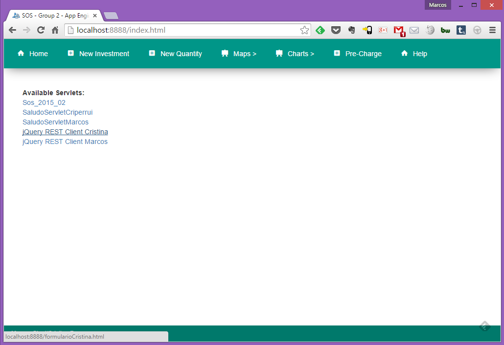
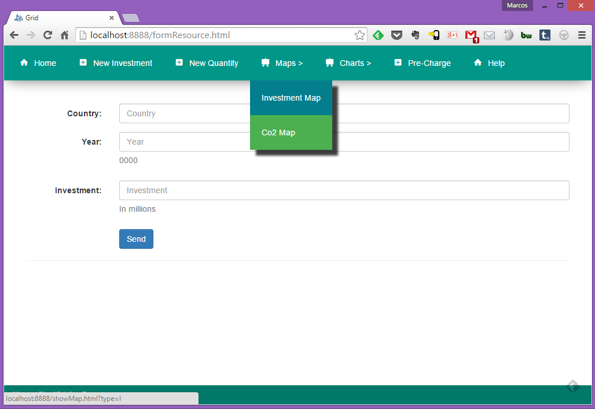
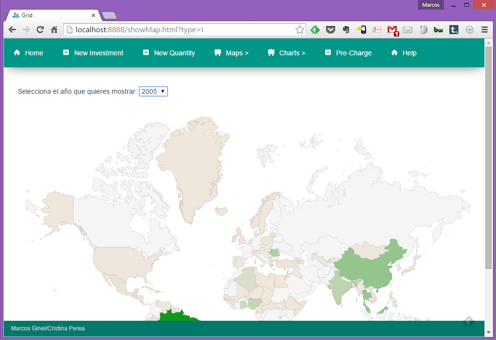
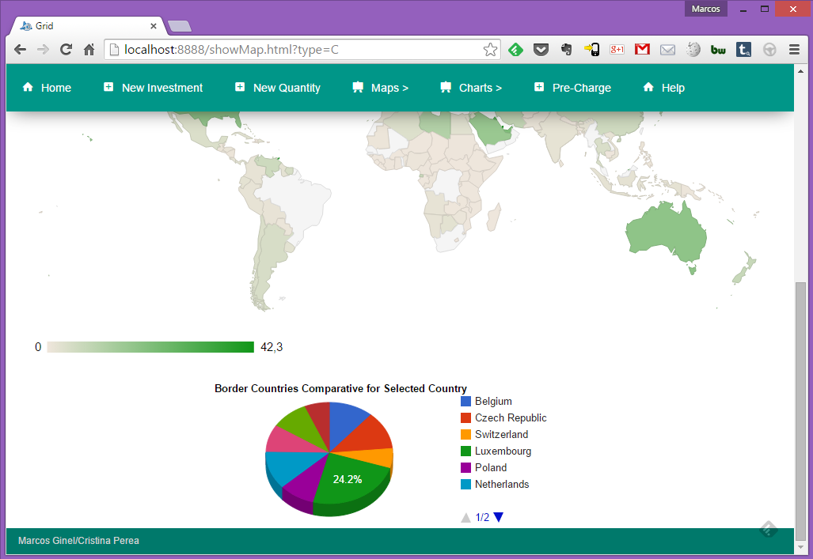
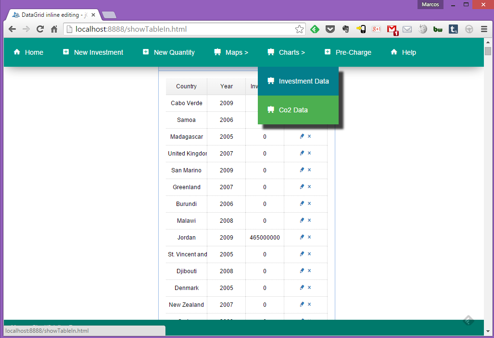
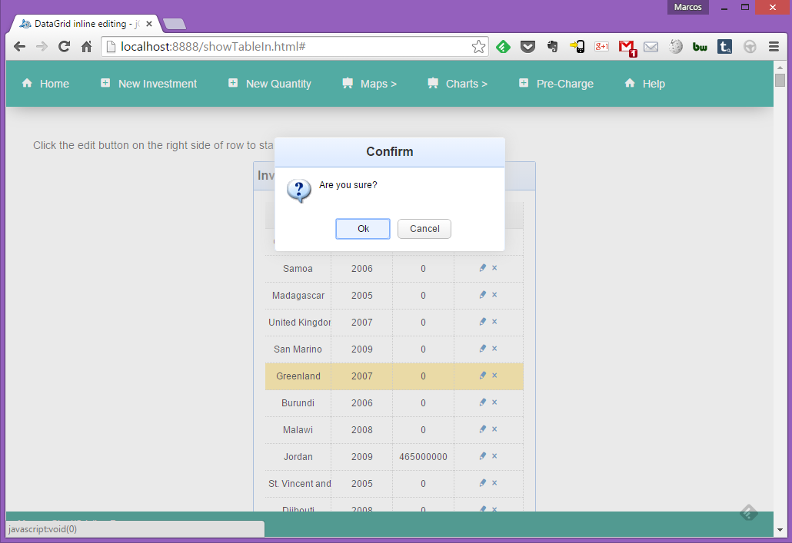
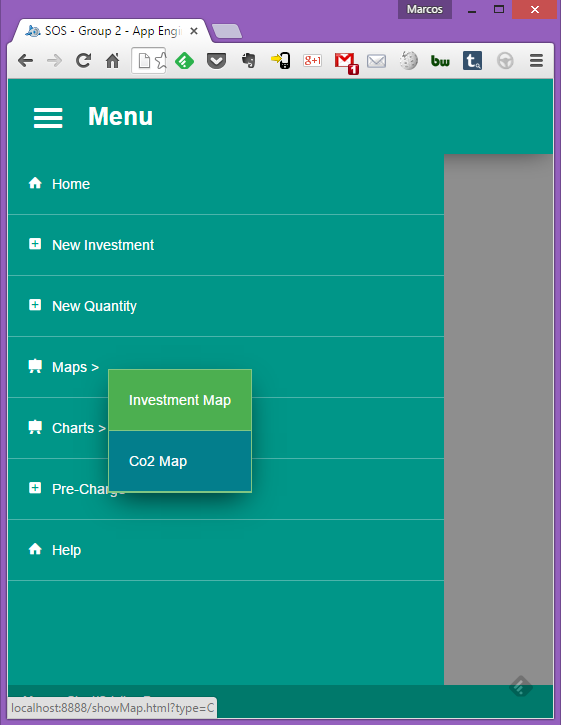

Se han diseñado para dos recursos muy parecidos dos APIs distintas para su uso siguiendo las directrices de RESTful APIs.
La segunda de estas APIs es la que más respeta el funcionamiento de las APIRestfull, y la que primero propuso Pablo Fernández para hacer. Visto que daba para poco juego la parte concerniente a los datos, ya que parte de los propios datos pertenecen a la "estructura de urls APIs", se optó por generar una primera API.
Se ha optado por usar SIEMPRE la V2, aunque se ha buscado la compatibilidad de ambas.
Nuestros recursos son:
AVISO: Si existiese algún posible bug, es de seguro fácilmente solventable ya que actualmente conviven ambas APIs y se ha intentado la mayor compatibilidad. La API v1 va creando la información por fases (tal y como nos lo dijo Pablo en su primera versión). La API v2 la crea de golpe respetando lo que nos informó Pablo de que siempre nos llegará al servidor una tupla, y devolveremos tuplas.
Esta API va a ir creando los objetos poco a poco. Primero habrá que hacer un POST del país, luego otro POST en la "subcarpeta" del pais para introducir el año, y luego un PUT en dicho año.
Aquí siempre vamos a pasar tuplas completas en JSON con campos country, year y quantity para co2, y country, year e inversion para countriesinversions
Aquí podremos ver el cliente jQuery REST para las APIs y usarlo para consultas.
Si se quiere eliminar todo el DataStore, se recomienda usar el Delete desde aquí.
Estos clientes han sido implementados durante las clases, son bastante interesantes desde el punto de vista académico. Además están formateados con Bootstrap 3
Con pulsar en New Investment o New Quantity se podrán añadir nuevos elementos.
Para New Investment hay que añadir
Para New Quantity hay que añadir
Todos los formularios tienen su validación HTML5 pertinente.
Pinchando en el Menú Maps, se desplegará un mapa para cada tipo de recurso:
Luego se elige un año, y se muestran los datos
Pinchando en cualquier pais se mostrará (petición a API externa) los datos de los vecinos
En cualquier momento se puede seleccionar cualquier año, redimensionar ventana, pasar a otro dispositivo, o seleccionar otro país.
Pinchando en el Menú Charts, se desplegará un chart para cada tipo de recurso:
Podemos pulsar en Editar (lápiz) y se nos enviará a un formulario de edición del recurso, o bien pinchar en la X (borrar) y se nos pedirá confirmación
En los formularios de edición se han bloqueado los campos Country y Year en función de los seleccionados y se validará el dato introducido con HTML5.
Se han seguido todos los principios de Material Design de cara a aplicaciones móviles para Android propuestos por Google; además se ha usado Bootstrap 3 y jQuery, para poder darle dinamismo y poder pasar de una interfaz a otra y el propio estilo (nótese cómo los "elementos" toman forma 3D gracias a las sombras al pasar a móvil)
